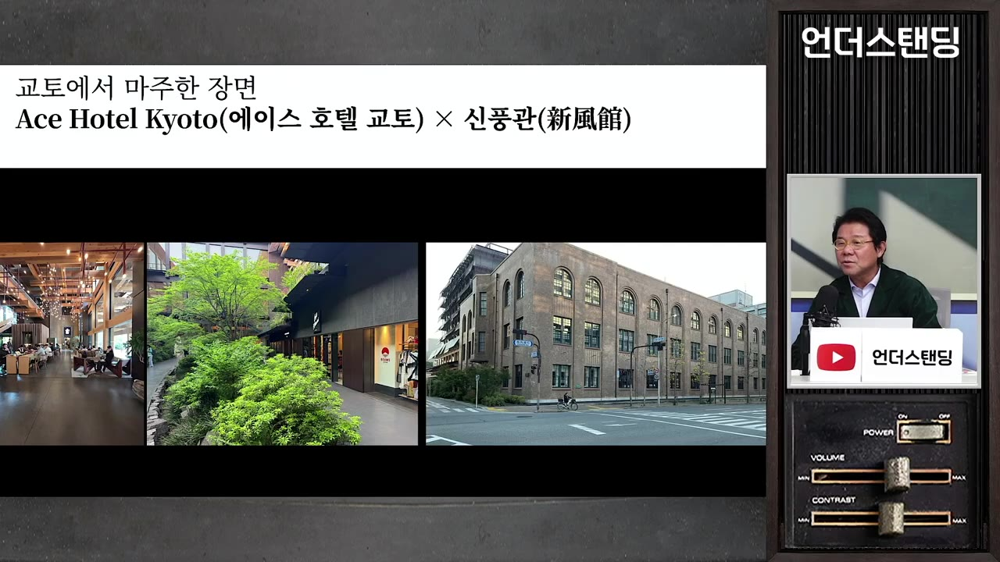
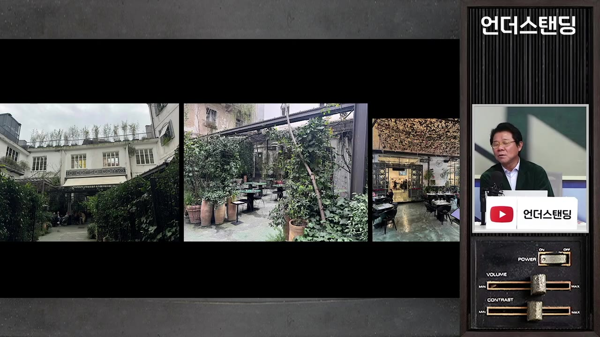
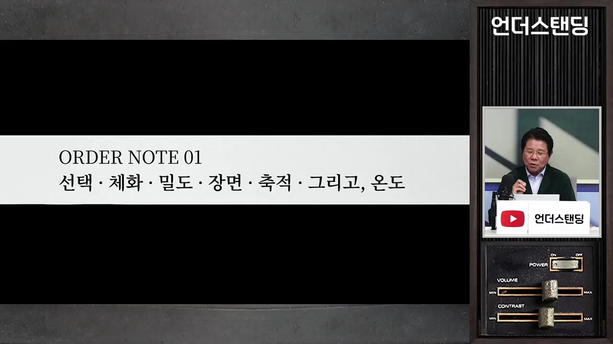
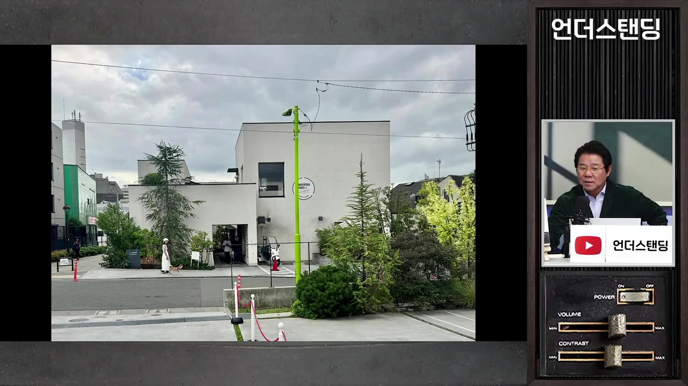
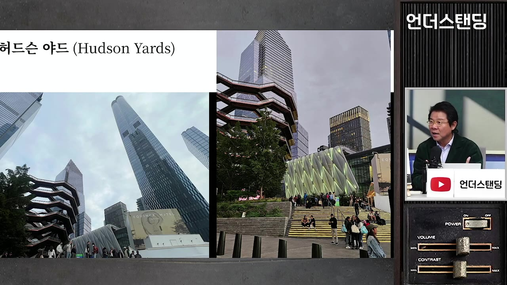

[양진석의 핫플 1부] 가로수길은 왜 몰락했나? 성수동 팝업의 한계와 30년 살아남는 공간의 비밀 | '당신의 공간은 영원한가' 저자 양진석 건축가
▶ 원본 영상 보기한눈에 보기
- 건축은 형태가 아니라 "그 공간이 들려주는 이야기"이며, 건물주·운영자의 태도가 공간에 그대로 드러난다는 것이 양진석 건축가의 핵심 주장이다.
- 팝업 중심의 성수처럼 유행을 따라가는 곳과, 1991년 개장 후 30년 넘게 인기를 유지하는 밀라노 코르소 코모처럼 "작동 원리(오더)"가 있는 곳은 다르다고 말한다.
- 오래가는 공간의 원리로 선택·체화·밀도·장면·축적·온도 6가지를 제시한다.
- 시모키타자와, 브라이언트 파크, 허드슨 야드, 아자부다이 사례를 들어 도시 단위에서도 같은 원리가 작동한다고 설명한다. 공통점은 건물주 비용 분담, 철도 상부 활용, 지주 공동 사업이다.
- 서울은 "잘 태어난 아이"라서 개발과 보존의 일관된 기준만 세우면 지금도 늦지 않다고 본다.
이런 분께 도움이 됩니다
- 상가·카페·숍·숙박 등 공간 사업을 하거나 준비하는 분, 건물주나 의사 결정권자.
- "왜 어떤 핫플은 금방 죽고 어떤 곳은 30년을 가는지" 판단하는 틀을 얻을 수 있다.
핵심 내용
건축은 형태가 아니라 이야기
건축은 형태로 인식되지만 궁극적으로는 "건축이 보여주고 싶은 이야기"라고 본다. 피카소 그림을 터치와 색만으로 평가하지 않는 것과 같다. (5:15)
- 그래서 "주변 건물과 어울리냐"는 질문은 가장 위험하다고 말한다. 서울의 미래를 말하면서 옆 상가 건물과 어울리게만 지을 이유가 없다는 논리다.
- DDP는 호불호가 갈리지만, 논쟁이 있다는 것 자체가 이야기가 있다는 뜻이다. 외국인이 꼽는 서울 현대 건축 1순위이며, 동대문 역사성을 덜 살렸다는 비판은 마땅하다고 본다. (7:23)
파크원은 구조체를 드러내고 원색을 쓰는 리처드 로저스 스타일이다. 호불호는 있으나 취향 문제로 인정할 수 있다고 한다.
건축은 미술·조각과 달리 의뢰인의 영향이 매우 큰 산물이라서, "건축가의 작품"이라는 말은 조심해야 한다.
- 공사비 부족, 사업성, 건물주의 마음 변화로 설계 의도가 바뀌는 일이 흔하다. (11:24)
- 건축가와 건축주는 은근한 밀당 관계다. 건축주는 정보가 부족해 전문가를 믿을 수밖에 없다는 불공정함을 토로하기도 한다.
건축주 교육이 도시를 바꾼다
- 저자는 건물주·CEO·의사 결정권자에게 건축·도시 교육을 15년째 하고 있다. 책을 여섯 권 낸 이유도 지식 공유가 필요하다고 느껴서다. (15:15)
- 해외 공장을 10여 개 지은 수출 기업인이 강의를 듣고 "지구에 쓰레기 같은 건물을 너무 많이 지었다"고 반성했다. 이후 일하는 사람의 쾌적함과 도시에 대한 배려를 챙기게 됐다고 한다. (16:21)
- 배려하지 않은 것은 악의라기보다 "어디에 배려해야 하는지 몰라서"인 경우가 많다고 본다.
💡 좋은 도시는 건축가보다 건물주·운영자의 안목에서 갈린다.
공간에는 운영자의 태도가 드러난다
공간도 사람처럼 위협적이거나 편안하거나 만만한 "태도"가 있다. 호텔·오피스 로비·리테일 모두 마찬가지다.
스타벅스와 블루보틀은 태도가 반대다. (22:25)
- 스타벅스는 소파가 있고 노트북을 펴고 오래 앉아 있어도 된다.
- 블루보틀은 의자가 딱딱하고 바(bar) 중심이다. 바리스타와 대화하며 기다렸다가 마시고 나가라는 태도다.
교토 에이스 호텔은 NTT가 100년 된 전신전화국 건물을 그대로 살리고 바로 옆에 증축한 호텔이다. (25:04)
- 하얏트·힐튼 같은 안전한 브랜드 대신 미국 포틀랜드 출신의 젊은 브랜드 에이스를 골랐다. 2020년 코로나 중에 오픈했고 약 200실 규모다.
- 대로변에 입구가 없고 골목 안으로 들어가야 한다. 로비는 프론트 대신 바와 커피 라운지이며, 밤에는 DJ 음악이 나온다.
- 교토 장인(목공·패브릭 등)과 협업해 "메이드 인 USA인데 속은 교토"로 만들었다. 커피는 호텔인데도 테이크아웃 5,000원 수준이다.
- 6년 차인 지금도 리츠칼튼·아만 등 최고급 호텔 사이에서 개성 있는 호텔로 존재감 1위라는 평가다.

💡 태도가 분명하면 유행을 타지 않고 계속 진화한다 — 단, 의도가 먹히지 않을 위험은 있다.
트렌드가 아니라 작동 원리(오더)를 봐야 한다
- 한국 상권은 수명이 짧다. 가로수길이 죽었다는 말이 대표적이다. 트렌드가 나쁜 게 아니라 그 뒤에 "작동 원리"가 있는지가 관건이다. 저자는 건축 용어 오더(order)를 작동 원리로 해석한다. (19:53)
- 태도·세계관·철학·기능이 모여 하나의 작동 원리가 된다.
- 성수의 팝업은 가장 트렌디한 방식이다. 그때그때 마케팅 요소를 넣고 한 달 뒤 빠지면 되기 때문이다. 문제는 팝업이 빠진 뒤 성수에 무엇이 남느냐이다. (40:18)
- 가로수길·경리단길·삼청동길이 잊혀진 것은 트렌드 소비와 젠트리피케이션(임대료 상승)의 영향이라고 본다.
- 오더가 있는 곳도 젠트리피케이션을 겪지만, 꾸준히 잘되니 상대적으로 덜 흔들린다.
- 저자가 디렉터로 참여한 그랑서울(종로, 2013년 준공) 사례다. (36:01)
- 도심 오피스 지하가 모두 똑같은 스타벅스 구성이 되는 것을 피하려고, 허영만의 식객촌과 투뿔등심(강북 첫 진출)을 넣었다.
- 회식할 고깃집이 없다는 문제를 풀려고 고깃집을 넣었고, 시공사 GS건설을 설득해 설비로 냄새를 막았다.
30년 가는 공간: 밀라노 코르소 코모
- 1991년 개장한 편집숍의 시조 격 공간으로, 옷·신발·책·전시·레스토랑을 한곳에 모은 곳이다. 당시에는 파격이었다. 지금도 핫하며 젠틀몬스터와 메종 마르지엘라의 콜라보가 이곳에서 열렸다. (42:46)

- 저자가 앉아 관찰한 특징이다. (45:11)
- 물리적 디자인이 거의 안 바뀌었다. 세련돼서 오는 게 아니라 오는 사람들이 세련됐다.
- 운영자가 전면에 나서지 않고, 이렇게 이용하라는 지침도 없다. 주문하라, 나가라는 말도 하지 않는다.
- 전혀 컨템퍼러리하지 않지만 컨템퍼러리한 자세를 취한다. 오래된 고서적과 디자인 트렌드 책이 같이 있다.
- 아류작은 전 세계에 많이 나왔지만 살아남은 곳은 몇 안 된다.
오래가는 공간의 6가지 원리 (오더 노트)
| 원리 | 뜻 | 영상 속 예시 |
|---|---|---|
| 선택 | 정교하게 고르고, 그 선택을 인정하는 사람만 받는다. 방문자는 "내가 훼손되지 않는지"를 본다 | 코르소 코모의 큐레이션, 강남 올리브영에서 느끼는 어색함 |
| 체화 | 공간과 내가 동화되는 것 | 노포, 드럼통 삼겹살집 |
| 밀도 | 사람·가구·벽의 밀도 | 아만 호텔은 의자 간격 10m, 조용한 분위기로 간섭을 줄임 |
| 장면 | 분위기(애트머스피어) 연출. 싫으면 안 오면 된다 | 하룻밤 500만 원이라도 할인 없는 아만 |
| 축적 | 시간과 경험이 쌓이는 것 | 코르소 코모의 30년 |
| 온도 | 위 모두가 합쳐져 느껴지는 공간의 온도 | 스페셜티 커피를 1,000~2,000원 더 주고 가는 이유 |

- 예약을 인스타그램 DM으로만 받는 노포도 취향을 드러내는 태도의 한 방식이다. (56:29)
💡 좋은 공간은 사람을 끌어들이는 힘이 아니라 다시 돌아오게 하는 힘이며, 한 번의 방문은 트렌드지만 반복 방문은 문화가 된다.
다시 오게 만드는 동네: 도쿄 시모키타자와
- 새것이 없고 오래된 곳이 많으며 반골 기질이 있는 동네다. 언더그라운드 라이브 바와 LP 바가 있고, 베어폰드 익스프레소는 5평에 좌석 2개뿐이라 서서 마시는 게 문화다. (59:36)
- 식당에서 "다 맛있습니다"라고 답하면 실망스럽고, "이 메뉴가 맛있다"고 말하는 자신감이 태도라고 한다.
- 철도 지하화로 생긴 상부 부지에 낮게 지은 머스터드 호텔은 1층이 호텔 로비이자 커피숍이자 동네 사랑방이다. (1:02:16)
- 이용객은 현지 주민 70%, 외지인 30%이고, 플리마켓이 열린다.
- 이 호텔과 리로드 쇼핑몰(2층 높이, 식당·화장품 가게)은 코로나 시기에 생긴 철길 개발 프로젝트다. 동네에 스며드는 낮은 건물이며, 저자는 표정 없는 건축을 선호한다고 한다.

- 한국 지방은 인스타 핫스팟만 있고 머물지 않는다는 지적도 한다. 점이 선·면으로 이어져야 지역 관광이 된다. (1:05:21)
도시 단위 사례: 건물주·지주가 함께 만든다
뉴욕 브라이언트 파크
- 1980년대에는 마약이 거래되던 우범지대였다. 주변 건물주들이 민관 협력(PPP, 퍼블릭 프라이빗 파트너십)으로 직접 돈을 내 공원을 개조하고 관리까지 맡았다. 뉴욕시는 소유자 역할만 한다. (1:08:23)
🔁 브라이언트 파크 재생 과정
- 우범지대 문제
- 민관 협의체
- 비용 분담
- 개조·관리
- 가치 상승
- 1우범지대 문제
마약 거래로 공원이 방치됨 (1:08:23)
- 2민관 협의체
건물주들이 PPP 협의체를 구성
- 3비용 분담
뉴욕시가 아닌 건물주가 비용 부담
- 4개조·관리
건물주가 공원을 새로 꾸미고 직접 관리
- 5가치 상승
사계절 운영(겨울 아이스링크 등), 임대료 수익 상승
- 주변 건물이 광장을 에워싼 구조는 베네치아 산마르코 광장, 시에나 캄포 광장과 닮았다. 서울광장은 주변이 도로라 접근성과 소속감이 약하다. (1:10:14)
- 한국에서 PPP가 안 되는 이유는 관·민 모두 비리 의심과 검증 압박이 크기 때문이라고 본다.
뉴욕 허드슨 야드
- 철길 플랫폼 옆에 기둥을 박고 인공대지를 올려, 1층은 철도, 2층부터 오피스·호텔·상업시설을 지었다. 약 20년이 걸렸고 연금 펀드(릴레이티드)가 참여했으며, 지금은 뉴욕의 미래로 불린다. (1:13:19)
- 저자는 서울역 플랫폼 위를 먼저 개발하거나 공원으로 쓰자고 제안한다. 용산 철도창 부지도 언급한다. (1:14:46)

도쿄 아자부다이
- 지주 공동 사업이다. 모리빌딩이 지주들과 협의해 함께 지었고, 지주는 배당이나 주식을 받았다. 쫓아낸 개발이 아니라 합의에 의한 개발이다. (1:15:42)
- 한국 아파트 재건축은 단지 안의 부동산 증식 개념이고, 지주 공동 사업은 도시를 만드는 개념이라는 대비를 든다.
서울에 대한 제언
기억할 숫자·인용
생각해볼 점
- 이 영상은 필름출판사의 지원으로 제작되어 저서 『당신의 공간은 영원한가』를 소개하는 성격이 있다. 사례는 저자의 해석이다.
- 성수·가로수길 평가는 "팝업 위주라 남는 게 없다"는 저자 시각이다. 성수에 지속적인 정체성이 생기고 있는지는 별도 자료로 확인해야 한다.
- 코르소 코모, 에이스 호텔, 시모키타자와는 모두 생존한 사례다. 같은 원리를 따르고도 실패한 곳(아류작)이 왜 실패했는지는 구체적으로 다루지 않는다.
- 6가지 원리는 설명 틀로는 유용하지만 정량적 근거가 없다. 임대료와 사업성이 맞아야 실행할 수 있다는 현실 제약도 영상에서는 비중이 낮다.
바로 해볼 일
- 자주 가는 카페·가게 하나를 골라 6가지 원리(선택·체화·밀도·장면·축적·온도)로 왜 다시 가게 되는지 적어 본다.
- 내가 운영하거나 관심 있는 공간에서 "이 선택을 인정하는 사람은 누구인가"를 한 문장으로 정의해 본다.
- 새 동네 한 곳을 정해 점심 한 끼와 골목 산책까지 이어서 걸어 보고, 점이 아니라 선·면으로 이어지는 곳인지 확인한다.